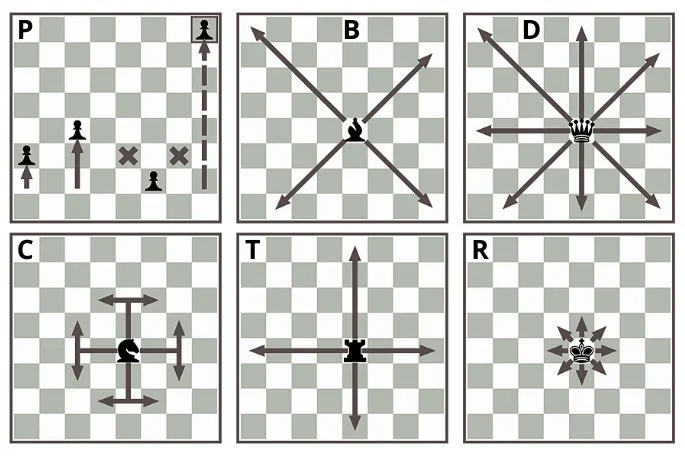

Xadrez
Xadrez é um jogo de estratégia disputado por dois jogadores sobre um tabuleiro quadrado dividido em 64 quadrados menores (casas) brancos e pretos, alternadamente. Cada um dos enxadristas, como são chamados os praticantes de xadrez, dispõe de 16 peças ou figuras de uma única cor, preta ou branca: um rei, uma rainha, dois bispos, dois cavalos, duas torres e oito peões. As peças são deslocadas pelos jogadores segundo determinadas regras, em jogadas alternadas.
Objetivo do jogo
é o “xeque-mate”, isto é, a tomada do rei adversário. As peças, o objetivo e a dinâmica do jogo indicam, portanto, ser o xadrez uma espécie de representação simbólica e simultaneamente lúdica da guerra
Regras do Xadrez
A partida de xadrez inicia-se com os dois jogadores na mesma posição, isto é, com as suas respectivas peças alinhadas nas duas primeiras filas de cada lado, obedecendo a seguinte ordem:
Primeira fila (da direita para a esquerda): torre, cavalo, bispo, rei, rainha, bispo, cavalo, torre
Segunda fila: oito peões.
Pela tradição, o jogo é sempre iniciado pelas peças brancas (ou claras, no caso das peças possuírem cores diferentes de preto e branco).
Movimento das peças de xadrez
As peças do xadrez movimentam-se conforme as seguintes regras:
Peão: movimenta-se para frente, em linha reta, uma casa por vez. Na posição inicial de cada peão, é permitido andar até duas casas (à escolha do enxadrista). O peão não retrocede (anda para trás) em nenhuma hipótese. Caso o peão consiga avançar até a oitava linha (primeira do adversário), ele é promovido e o jogador pode trocá-lo por qualquer peça, exceto peão ou rei.
Torre: movimenta-se na vertical ou horizontal, o número de casas que o enxadrista desejar, desde que não haja nenhuma outra peça no caminho. Peças da mesma cor limitam o movimento à casa anterior, peças do adversário podem ser capturadas, tomando o seu lugar.
Bispo: movimenta-se na diagonal livremente, também o número de casas que o enxadrista desejar desde que não haja nenhuma outra peça no caminho. O bispo jamais muda a cor da casa em que realiza seu movimento.
Cavalo: movimenta-se em "L", uma casa como torre (vertical ou horizontal) e uma como bispo (diagonal). Apenas ao cavalo é permitido saltar peças que estejam no caminho de seu movimento.
Rainha: movimenta-se livremente em todas as direções, como torre ou como bispo (vertical, horizontal e diagonal)
.Rei: movimenta-se como a dama, mas apenas uma casa por vez. O movimento do rei também é limitado pelas casas defendidas pelo adversário (ele não pode se colocar em xeque).
Captura das peças
A captura das peças, também chamada de conquistar, tomar ou "comer" é parte essencial do jogo.
As peças capturadas são retiradas do jogo, com exceção do rei, já que sua captura decreta o fim da partida.
A peça que capturou deve então ocupar a casa em que estava a peça capturada. A captura respeita o movimento básico de cada uma das peças.
O peão é uma exceção. Ele se movimenta verticalmente, mas captura na diagonal, lateralmente a seu avanço.
Caso uma peça adversária se encontre em frente a um peão, ela limita seu movimento e não pode ser capturada.
Como o peão só avança, ele também não pode capturar para trás. Xeque e Xeque-mate.
Xeque e Xeque-mate
O lance em que o rei é ameaçado pelas peças adversárias é chamado xeque. O jogador que propõe o ataque ao rei diz a palavra "xeque" para anunciar que o rei está em risco (em xeque).
Após decretado o xeque, só é permitido ao jogador que o recebe movimentar peças para a defesa do rei e assim, sair do xeque.
A vitória no xadrez é determinada quando um jogador realiza um movimento de ataque ao rei adversário, deixando-o sem opção de movimento para a defesa ou de fuga para o rei. Quando isso ocorre o jogador que realizou o ataque ao rei decreta o "xeque-mate" e sela a sua vitória.
Tradicionalmente, o jogador derrotado reconhece a vitória de seu oponente com um aperto de mãos.